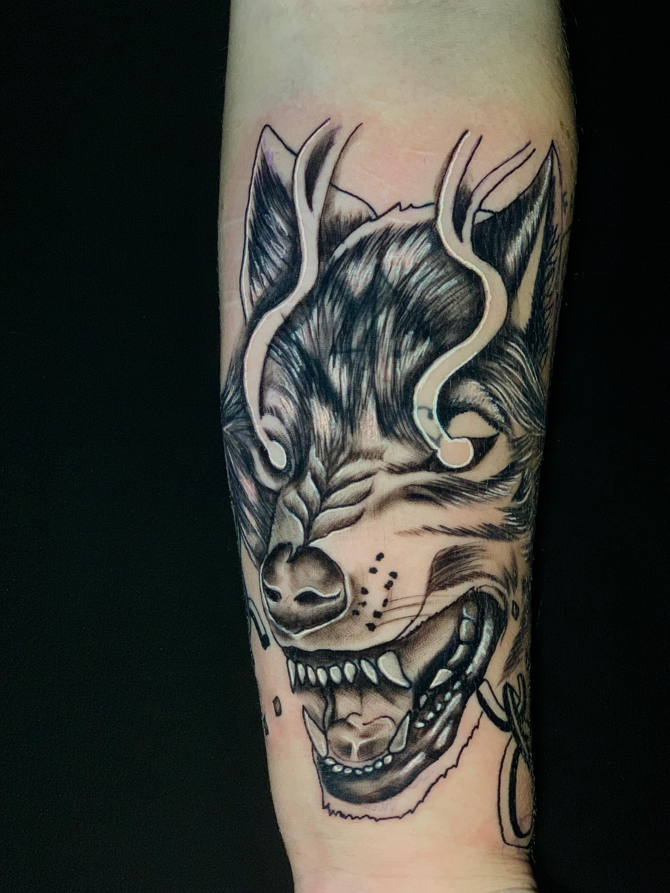
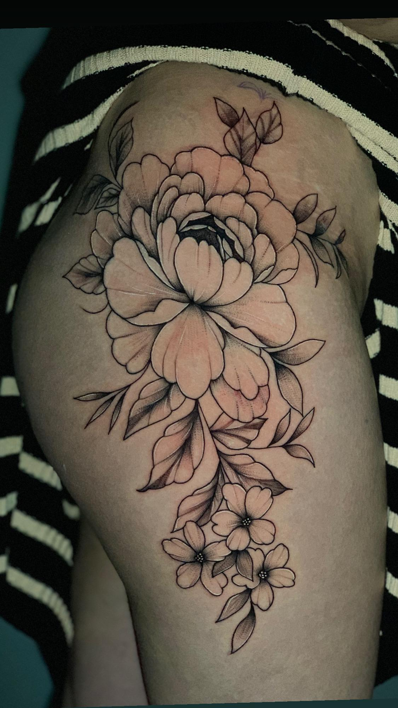
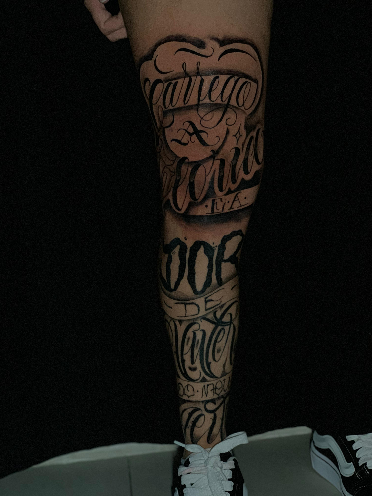
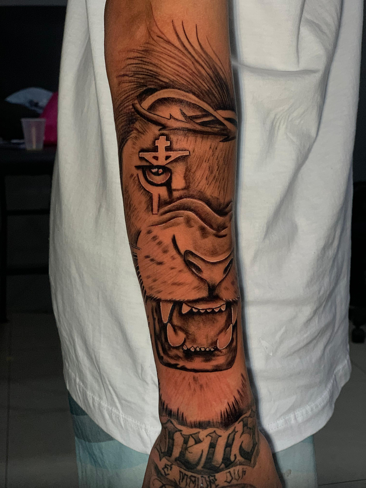
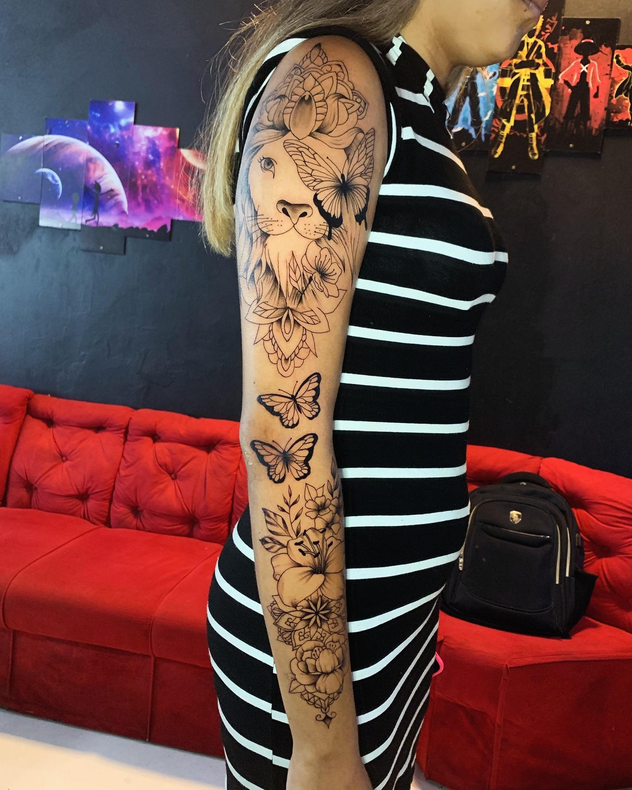
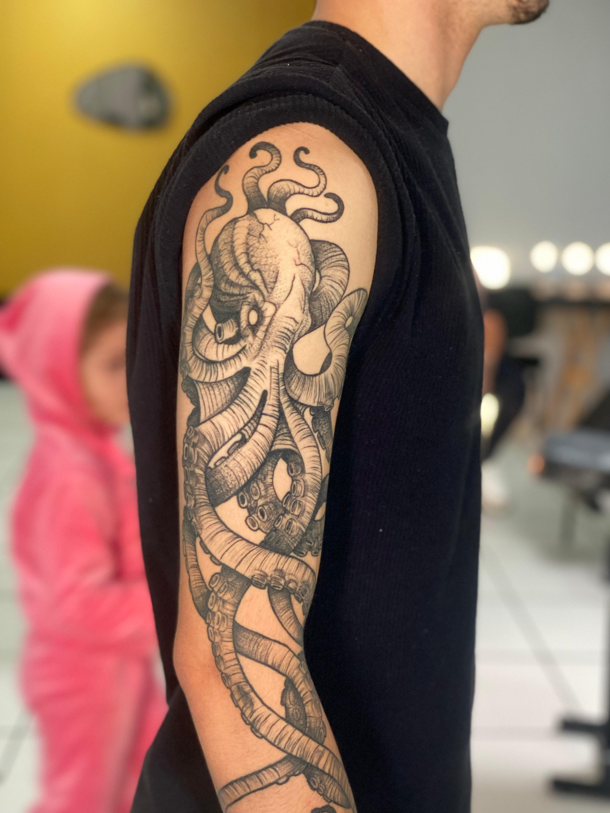
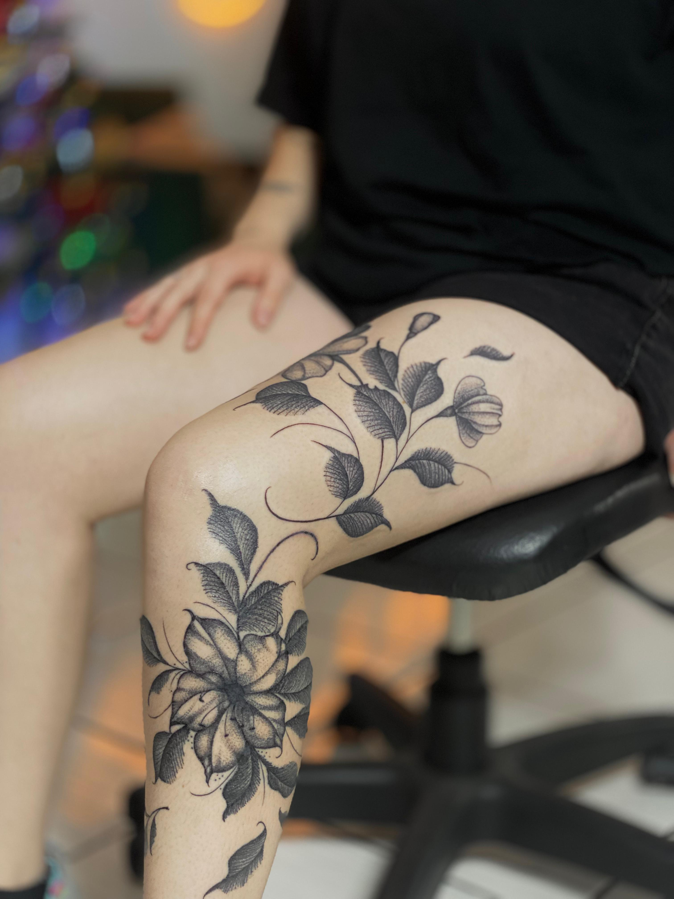
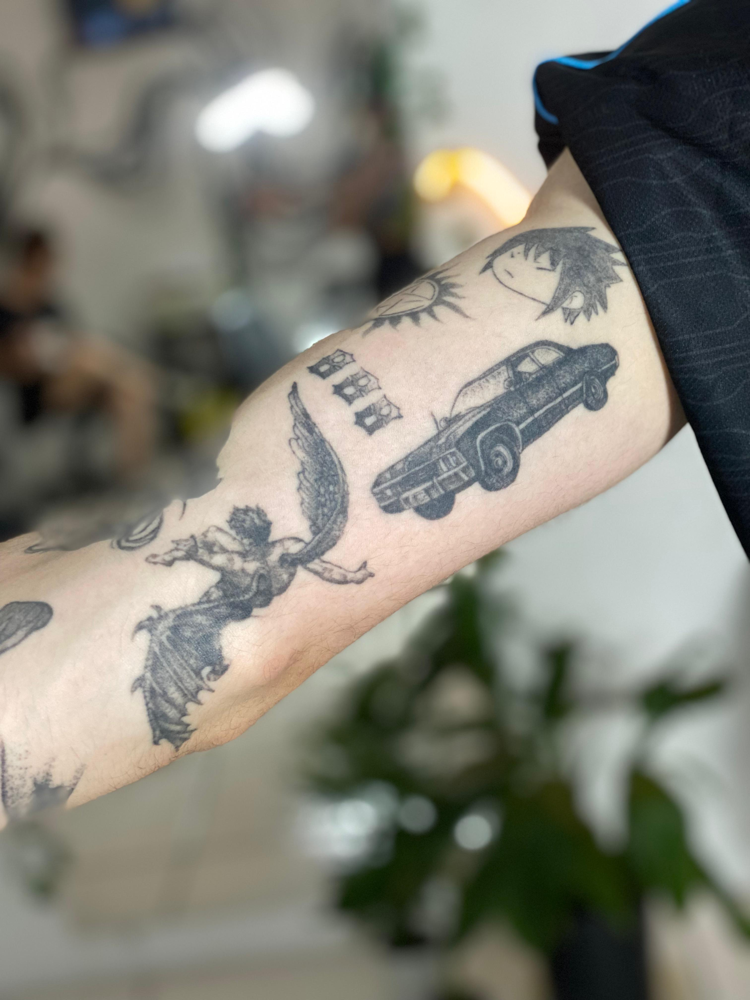
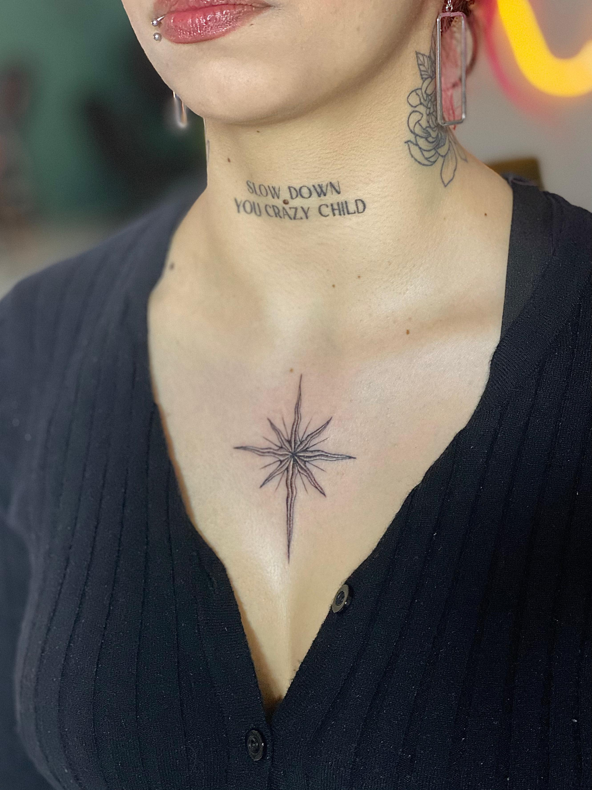
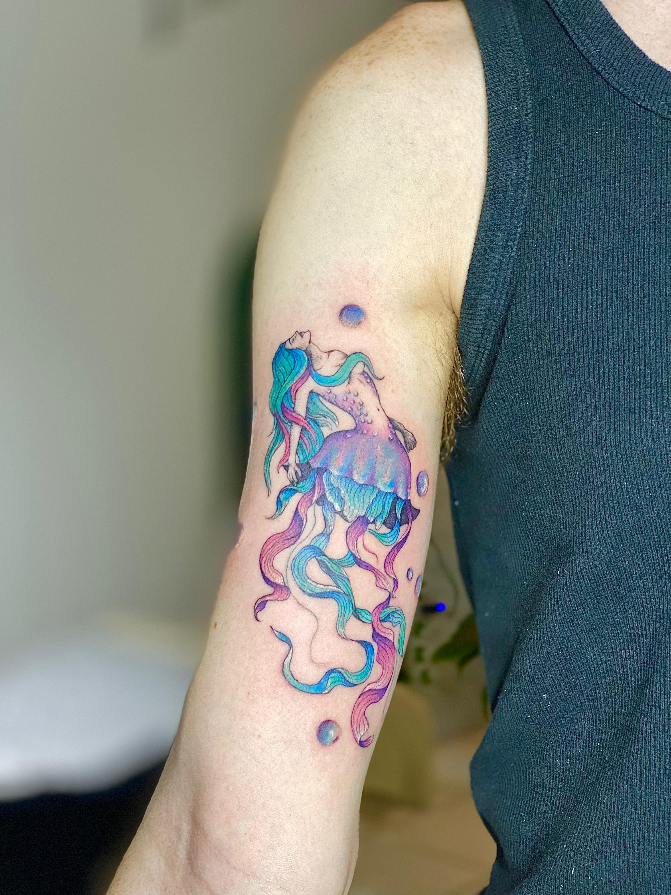

Conheça os artistas por trás do Lírico Estúdio
No Lírico Estúdio, cada traço conta uma história. Aqui, a tatuagem não é apenas estética — ela é sentimento, identidade, e arte viva sobre a pele. Nosso portfólio é o reflexo de um trabalho feito com paixão, cuidado e técnica refinada, onde cada detalhe é pensado para eternizar momentos, homenagens e significados. E por trás de cada projeto, estão dois tatuadores que traduzem ideias em obras visuais únicas e marcantes.
Juntos, eles representam a essência do Lírico: tatuagens com alma, feitas por quem vive a arte todos os dias.

Jeff
Especialista em black and grey e tatuagens de impacto visual, Jefin transforma a pele em tela e imprime emoções em detalhes precisos. Seu estilo é marcado por contrastes fortes, sombras expressivas e composições intensas, trazendo à tona sentimentos e significados que vão muito além da tinta.

Vivian
Com um olhar sensível e uma técnica refinada, Vivian se destaca por seus traços delicados, fineline impecável e composições que equilibram leveza e personalidade. Seu trabalho é voltado à conexão entre tatuador e cliente, valorizando histórias únicas e transformando ideias em tatuagens exclusivas e memoráveis.
Galeria de Jeff












Galeria de Vivian








